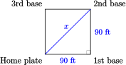
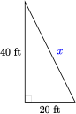

Section 3.1 Extraction of Roots
Subsection 1. Evaluate quadratic expressions
When squaring a negative number, don't forget to enclose it in parentheses. For example, if \(x=-4\text{,}\) then
If we write \(-4^2\text{,}\) then only the 4 is squared, so we have
Subsubsection Examples
Example 3.1.
Evaluate for \(x=-6\text{.}\)
- \(\displaystyle 2x^2\)
- \(\displaystyle 2-x^2\)
- \(\displaystyle (2x)^2\)
- \(\displaystyle (2-x)^2\)
Enclose \(-6\) in parentheses, and follow the order of operations.
- Square first, then multiply by 2: \(~~2x^2=2(-6)^2=2(36)=72\)
- Square first, then subtract from 2: \(~~2-x^2=2-(-6)^2=2-36=-34\)
- Multiply by 2 first, then square: \(~~(2x)^2=[2(-6)]^2=[-12]^2=144\)
- Subtract from 2 first, then square: \(~~(2-x)^2=[2-(-6)^2=[8]^2=64\)
Example 3.2.
Make a table of values for \(y=x^2+2x-8\text{,}\) and graph the equation.
We plot the points from the table and connect them with a smooth curve.
| \(x\) | \(y\) | \(\hphantom{0000}\) | |
| \(-5\) | \(7\) | \((-5)^2+2(-5)-8=25-10-8\) | |
| \(-4\) | \(0\) | \((-4)^2+2(-4)-8=16-8-8\) | |
| \(-3\) | \(-5\) | \((-3)^2+2(-3)-8=9-6-8\) | |
| \(-2\) | \(-8\) | \((-2)^2+2(-2)-8=4-4-8\) | |
| \(-1\) | \(-9\) | \((-1)^2+2(-1)-8=1-2-8\) | |
| \(0\) | \(-8\) | \((0)^2+2(0)-8=0+0-8\) | |
| \(1\) | \(-5\) | \((1)^2+2(1)-8=1+2-8\) | |
| \(2\) | \(0\) | \((2)^2+2(2)-8=4+4-8\) | |
| \(3\) | \(7\) | \((3)^2+2(3)-8=9+6-8\) |
Subsubsection Exercises
Checkpoint 3.3.
Evaluate for \(w=-9\)
- \(\displaystyle (2w)^2\)
- \(\displaystyle 36-(2w)^2\)
- \(\displaystyle -2(4-w)^2\)
- \(\displaystyle 2-w^2\)
- \(\displaystyle 324\)
- \(\displaystyle -288\)
- \(\displaystyle -338\)
- \(\displaystyle -79\)
Checkpoint 3.4.
Evaluate for \(a=-3,~b=-4\)
- \(\displaystyle ab^2\)
- \(\displaystyle a-b^2\)
- \(\displaystyle (a-b^2)^2\)
- \(\displaystyle ab(a^2-b^2)\)
- \(\displaystyle -48\)
- \(\displaystyle -19\)
- \(\displaystyle 361\)
- \(\displaystyle -84\)
Checkpoint 3.5.
Evaluate for \(h=-2,~g=-5\)
- \(\displaystyle h^2-2hg+g^2\)
- \(\displaystyle (h-g)^2\)
- \(\displaystyle h^2-g^2\)
- \(\displaystyle (h-g)(h+g)\)
- \(\displaystyle 9\)
- \(\displaystyle 9\)
- \(\displaystyle -21\)
- \(\displaystyle -21\)
Checkpoint 3.6.
Make a table of values for \(y=x^2-x-6\text{,}\) and graph the equation.
| \(x\) | \(y\) |
| \(-3\) | \(\hphantom{0000}\) |
| \(-2\) | \(\hphantom{0000}\) |
| \(-1\) | \(\hphantom{0000}\) |
| \(0\) | \(\hphantom{0000}\) |
| \(1\) | \(\hphantom{0000}\) |
| \(2\) | \(\hphantom{0000}\) |
| \(3\) | \(\hphantom{0000}\) |
| \(4\) | \(\hphantom{0000}\) |
| \(5\) | \(\hphantom{0000}\) |

| \(x\) | \(y\) |
| \(-3\) | \(6\) |
| \(-2\) | \(0\) |
| \(-1\) | \(-4\) |
| \(0\) | \(-6\) |
| \(1\) | \(-6\) |
| \(2\) | \(-4\) |
| \(3\) | \(0\) |
| \(4\) | \(6\) |
| \(5\) | \(14\) |
Subsection 2. Use square roots
The simplest quadratic equations have the form
They are missing a linear term, \(bx\text{,}\) and are not difficult to solve.
Subsubsection Examples
Example 3.7.
Solve \(~3y^2-40=35~\) by extraction of roots.
We isolate the quadratic term, \(y^2\text{,}\) and then extract roots.
The solutions are \(5\) and \(-5\text{.}\)
Example 3.8.
A cone is 16 cm tall and its volume is 500 cm\(^3\text{.}\) What is the radius of the base of the cone?
We substitute \(h=16\) and \(V=500\) into the formula for the volume of a cone, and solve for \(r\text{.}\)
The radius of the cone is 5.46 cm.
Subsubsection Exercises
Checkpoint 3.9.
Solve by extraction of roots.
- \(\displaystyle 98=2a^2\)
- \(\displaystyle 0=3n^2-15\)
- \(\displaystyle 144 = \dfrac{h^2}{9} = 169\)
- \(\displaystyle 12-5v^2=2\)
- \(\displaystyle \pm 7\)
- \(\displaystyle \pm \sqrt{5}\)
- \(\displaystyle \pm 15\)
- \(\displaystyle \pm \sqrt{2}\)
Checkpoint 3.10.
A cylindrical syringe holds 100 cc (cubic centimeters) of fluid. If the syringe is 10 centimeters long, what is its radius?
1.78 cm
Subsection 3. Use the Pythagorean theorem
If \(a\) and \(b\) are the lengths of the legs of a right triangle and \(c\) is the length of the hypotenuse, then
Note that the theorem is true only for right triangles -- ones that have a 90\(\degree\) angle.
Subsubsection Examples
Example 3.11.
Find the unknown side in the right triangle.
The unknown side is the hypotenuse, so we apply the Pythagorean theorem with \(c=z,~a=12\text{,}\) and \(b=35\text{.}\)
The length of the hypotenuse is a positive number, so \(z=37\text{.}\)
Example 3.12.
A 25-foot ladder is placed against a wall so that its foot is 7 feet from the base of the wall. How far up the wall does the ladder reach?
We make a sketch and label the known dimensions, calling the unknown height \(h\text{.}\) The ladder forms the hypotenuse of a right triangle, so we apply the Pythagorean theorem, substituting 25 for \(c\text{,}\) 7 for \(b\text{,}\) and \(h\) for \(a\text{.}\)
We solve the equation by extraction of roots:
The height must be a positive number, so the ladder reaches 24 feet up the wall.
Subsubsection Exercises
Checkpoint 3.13.
A baseball diamond is a square whose sides are 90 feet long. Find the straight-line distance from home plate to second base.
- Make a sketch of the situation and label a right triangle.
- Write an equation and solve.
- 
- 127.28 ft
Checkpoint 3.14.
How long a wire is needed to stretch from the top of a 40-foot telephone pole to a point on the ground 20 feet from the base of the pole?
- Make a sketch of the situation and label a right triangle.
- Write an equation and solve.
- 
- 44.72 ft